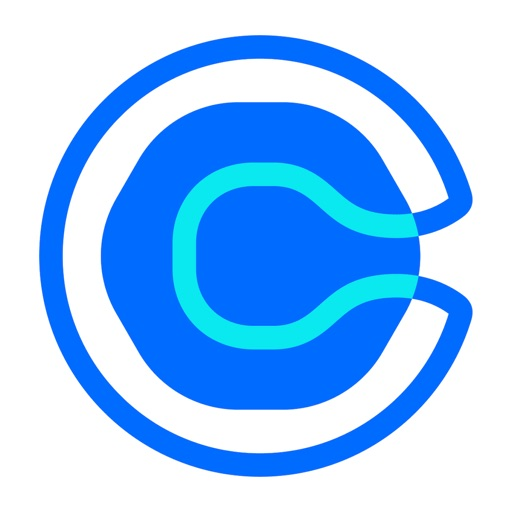

"Struggling to reestablish the calendar functionality... no real support whatsoever."
Fresh March 2026 feedback pointing to opaque calendar reconnect and recovery flows.
Built for Chirag Chheda, CTO at CalendlyWhat if every mobile booking came with a confidence score?
Recent iOS and Android feedback points to the same product risk: users can share a link or accept a slot without really knowing whether their calendar sync, time zone, and availability rules are still trustworthy.
Research signal
The issue is booking trust, not missing features
When users report login loops, slot mismatches, time-zone confusion, stale links, and hidden conflicts, the mobile app starts feeling like an unreliable view into the real scheduling system.
Users report that all-day meetings across connected Google and Outlook calendars are not always marked unavailable.
The failure mode is correctness, not discoverability.A user described getting 300-400 fake Calendly invites per day, forcing manual verification of which bookings were real.
Trust issues now extend beyond UI into the booking surface itself.A simple, mobile-first layer that explains whether the current booking state is healthy, risky, stale, or broken before the user shares or edits anything.
Calendly is visibly investing in platform services, APIs, and developer ecosystem growth. That means reliability improvements can be positioned as leverage across product, support, and revenue motion.
An AI-assisted Booking Confidence Center that surfaces connection health, timezone clarity, stale one-time links, verification status, and one-tap fixes.
Prototype
Booking Confidence Center
A narrow but high-leverage mobile layer: turn invisible scheduling state into something users can verify before a broken meeting escapes.
Current mobile feel
Before
Links go out. Trust stays hidden.
Mobile shares the booking surface, but not enough state to trust it.
Share 30 min intro
Live linkLooks healthy, but the app does not show whether your calendar connections or timezone assumptions are still safe.
What users are hitting
3 issuesSign-in loop after login attempt
Slot filled error after schedule changes
Time feels wrong for one side of the meeting
Missing context
No at-a-glance answer for calendar health, stale links, all-day conflicts, or verification state.
Support cost
Users fall back to desktop, docs, or support because mobile cannot explain what is broken.
Proposed host view
After
Confidence before every share
A single screen that tells the host whether the booking system is actually safe.
96
Connection health
2 healthyGoogle CalendarLast sync 21 sec ago
OutlookAll-day conflict detected
iCloudOptional fallback, not primary
Timezone preview
Needs reviewHost: 9:30 AM EDT
Invitee: 2:30 PM BST
AI flag: this event was created before travel mode changed your local offset.
One-time link freshness
StaleYour availability changed after this link was sent. Re-issue the link or auto-convert it to a safe fallback window.
Invite trust
VerifiedEmail verification is on for this event type. Unknown domains get an extra challenge before the invite lands.
Platform ops view
Ops
Root cause, not guesswork
Give Chirag's team a mobile-specific reliability readout instead of scattered complaints.
Issue mix this week
-18%Top drivers: auth refresh loops, stale one-time links, timezone mismatch on travel events.
AI root-cause summary
83% of today's slot filled failures came from availability changes after link creation, not genuine capacity exhaustion.
Action queue
Prompt users to refresh stale links before share
Ship silent token refresh retry for Android login loop
Add all-day conflict visibility to mobile availability check
Why it compounds
One observability layer improves support triage, user trust, and rollout safety across the scheduling stack.
Why Elinext
Small surface area. High engineering leverage.
The concept is deliberately scoped to something a mobile-focused external team can prove quickly without forcing a full product rewrite.
Design and build the confidence surface inside iOS / Android with safe editing paths, state explanations, and recovery prompts.
Instrument stale-link, auth, timezone, and sync events so platform teams can quantify which failure modes actually drive churn and support.
Classify issue clusters and generate plain-language remediation steps for users and support agents instead of sending them into docs loops.